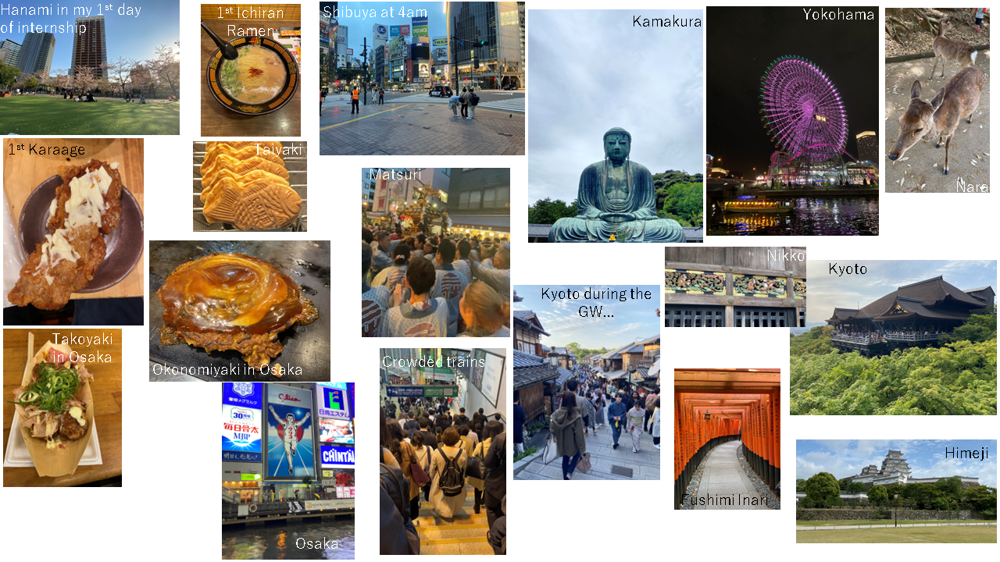

SONY Internship
Aug 28, 2023 | Internship | 0From April to July 2023 I had the opportunity to do an internship at Sony Research. It was an amazing experimence not only for improving my technicall skills but also contrinuted to my personal grouth.
At work
Last April, I arrived to Tokyo, Japan for the first time in my life. I went there to do an internship at Sony Research. I was very excited about this opportunity, but also a bit nervous.
I had never been in Japan before, and I was going to be there for more than 3 months. I was also a bit nervous about the language, since I did not speak Japanese. However, I was very excited about the opportunity to work in a big company like Sony, to learn new research topics and about the Japanese culture.
All of this nervous and excitement feelings were gone after the first day. I was lucky to met a group of spanish people the next day after I land in Tokyo and we went to a Hanami in Ueno park to see the Sakura. It was amazing and I started to notice the first cultural differences, e.g., everyone cleaned up after the Hanami, and the next day, the park was clean again.
After the first weekend that I spent resting from the trip and looking the places around my home, I went to the office the next Monday, and again more cultural differences (most of them very positive!). People waited for the train in organized cues! However, the train was very crowded, but that's a thing that I was expecting (weel, maybe not at that level).
I was lucky because my first working day was the first working day in Japan, the 3rd of April, so I went to a Hanami with the team. I felt very lucky to have a great team, and the most important thing, they were always open and ready to help me.
In the next weeks, I also had the opportunity to meet other interns from different countries, so I could also learn about other cultures. I had never met people from Japan, Korea or China before, so I really enjoyed meeting them.
Visiting Japan
Apart from working, I could visit different Japanese cities. My stage in Japan coindided with the Golden Week, a long vacation in Japan. I took advantage of this to visit Kyoto, Osaka, Nara and the Himeji's castle. During the weekends, I also had time to visit Kamakura, Nikko, Yokohama and some parts of Tokyo.
I enjoyed the Takoyaki and Okonomiyaki in Osaka (a must try!), different kinds of Ramen, Sushi, Sashimi, Udon, Tempura, etc.
I also experienced the "Omakase" where a fantasic chef prepared a closed menu that depended on what he had bought that day at the market.

Conclusion
Overall, the intership experience at Sony plus the opportunity to live in Japan was amazing, a 10/10.
Going abroad to a different country without knowing the language can be sometingh overwhelming, but the experience is worth it and I would recommend it to everyone. Not only to grow as a researcher but also as a person.
Thank you
I want to thank SONY for bringing me this amazing oportunity, to my tutor Koichi and all my collaborators: Marco, Naoki, Jesse, Weihsiang, Yuki...and to all the researchers and interns from the Music Foundation and Generative Models Teams with whom I had the pleasure to work and talk with, Kinwai, Roser, Frank, Donjoung, Kelly...
I also want to thank my spanish friends that have become a family for me: Nai, Rocío, Dani, Astrid, I will see you soon again in Japan.
Recommendations
If you read this and you are thinking about traveling to Japan I would recommend to learn at least Katakana, it will help you reading menus in restaurants.
Leave a comment